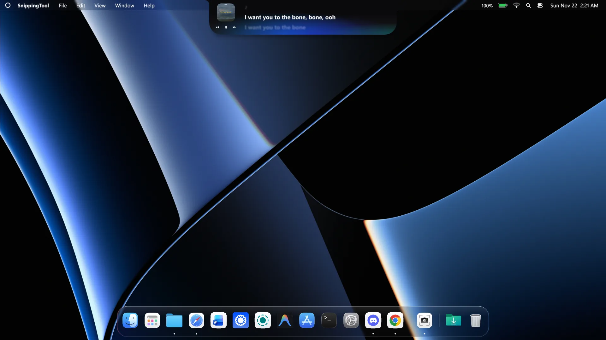
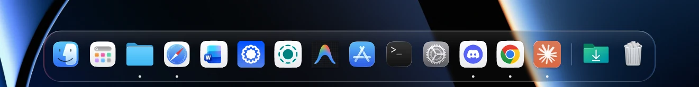
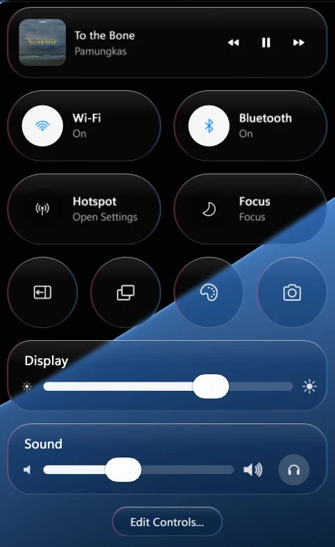
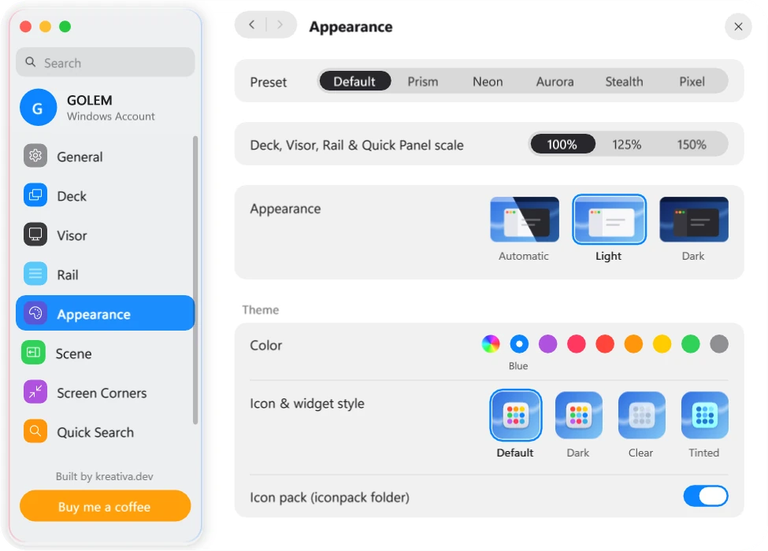
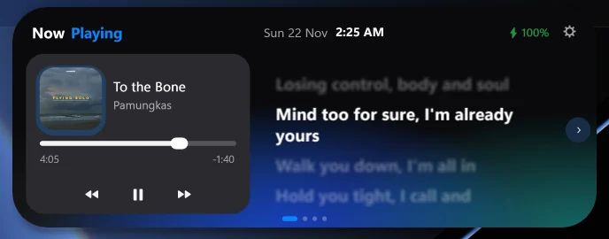
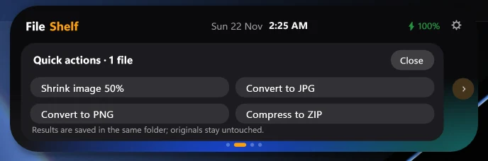
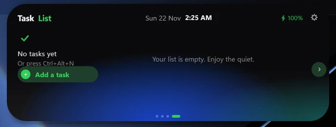
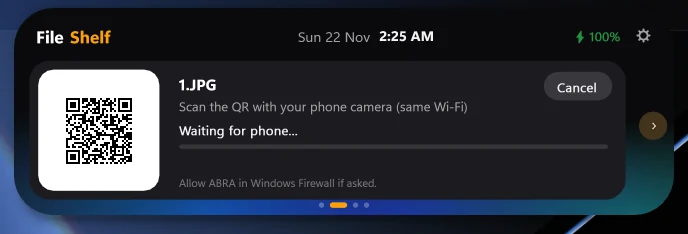
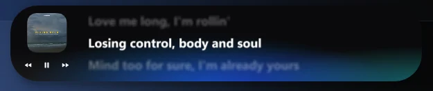
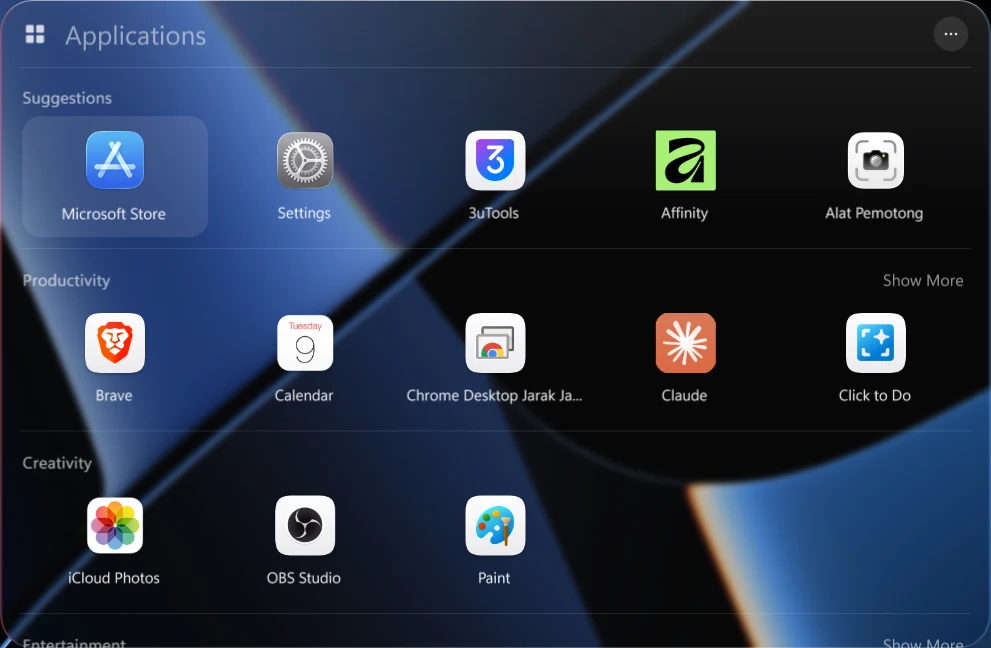

Windows 11, in crystal.
Deck, Visor, Rail and more. Native, tiny, no account.
Windows 11 (build 22000+) · 64-bit · No admin needed · Early Access
Deck, Visor, Rail and more. Native, tiny, no account.
Windows 11 (build 22000+) · 64-bit · No admin needed · Early Access
A magnifying app bar with live window previews, a Funnel or Scale minimize effect, a Downloads stack and a crystal Trash.
A pill at the top of the screen that shows what is going on: music with live lyrics, downloads, focus sessions, tasks and files. Float it and it becomes the Capsule.
Wi-Fi, Bluetooth, Display, Sound, Playing and more. Drag controls to rearrange them and drag the crystal corner to resize.
Press Ctrl + Space to search apps, files, actions and clipboard, with a built-in calculator.
Clock, Today, Month, Battery, System Monitor and more, in the Original or Crystal material.
The same accent colors and themes as ABRA's Settings. Try them here; this whole page follows along.
A working mock-up, not a video. Hover the Deck, tap the Visor, flip the switches.
A screenshot of ABRA running on Windows 11.


A magnifying app bar with live previews and a Downloads stack.

Wi-Fi, Bluetooth, sliders and more. Drag to rearrange.

Presets, accent colors, themes and fonts in one sidebar.
Music, files, tasks and more, one page at a time.

Album art, live synced lyrics and full playback controls with a seek bar.

Drop a file on the Visor to shrink an image by half, convert it to JPG or PNG, or zip it. Results are saved next to the originals.

Add a task from anywhere with Ctrl + Alt + N and see it right in the Visor.

Drop files on the Visor to keep them on the Shelf, or scan a QR code to send them to any Android or iPhone. No app needed.

Float the Visor and it becomes a Capsule. Choose which modules it shows, in any order, even side by side.

Every installed app in a full-screen crystal grid, sorted into groups.
No telemetry, no analytics, no account and no ads. Everything stays on your PC. ABRA only reaches out for two optional things: a lyrics lookup on LRCLIB when a song has no local lyrics file, and a check for new versions on GitHub about every 12 hours. Both can be turned off.
Requires Windows 11 (build 22000 or newer), 64-bit.
Get ABRA-Setup.exe for a per-user install, or the portable .zip. For the portable one, keep abra.exe, abra-guard.exe and the fonts folder together.
No administrator rights. Pick a Start menu shortcut and launch at sign-in if you like.
The Rail, Visor and Deck appear. Open Settings by clicking the logo in the Rail.
Early Access. ABRA is still in active development, so things can break or change between versions. Bugs and ideas are welcome on GitHub.
Windows SmartScreen may warn about an unsigned app. Choose More info → Run anyway. Only do this for files downloaded from this site or the official GitHub releases.
Antivirus flags ABRA? It is a false positive: ABRA is unsigned and new, and a desktop shell has to do things scanners find unusual, like hiding the taskbar and hooking Alt+Tab. Compare the SHA256 shown next to each file on the Releases page before you run it.
Updating? Install the new version over the old one. Your settings, pinned apps and Quick Panel layout are kept. From 0.5.0 on, ABRA also offers new versions itself. To quit, right-click an empty part of the Deck → Quit ABRA; the taskbar comes back automatically.
ABRA is free and built in spare time by kreativa.dev. If it makes your desktop nicer, you can buy me a coffee. It keeps the project going. Terima kasih!